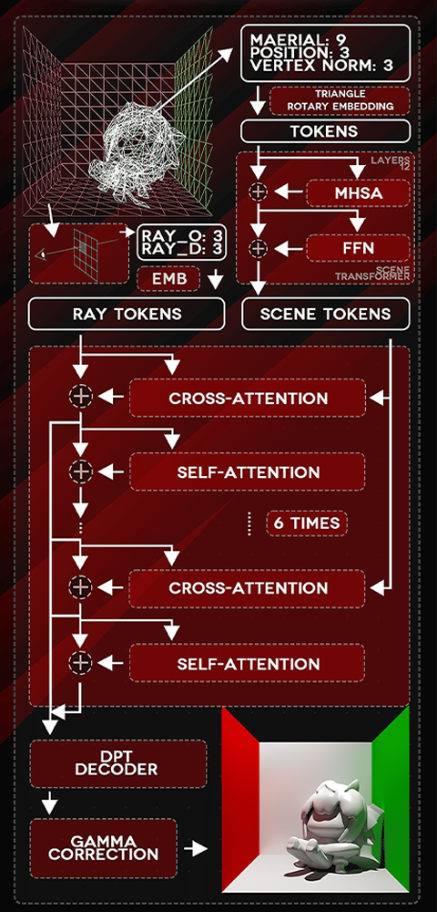
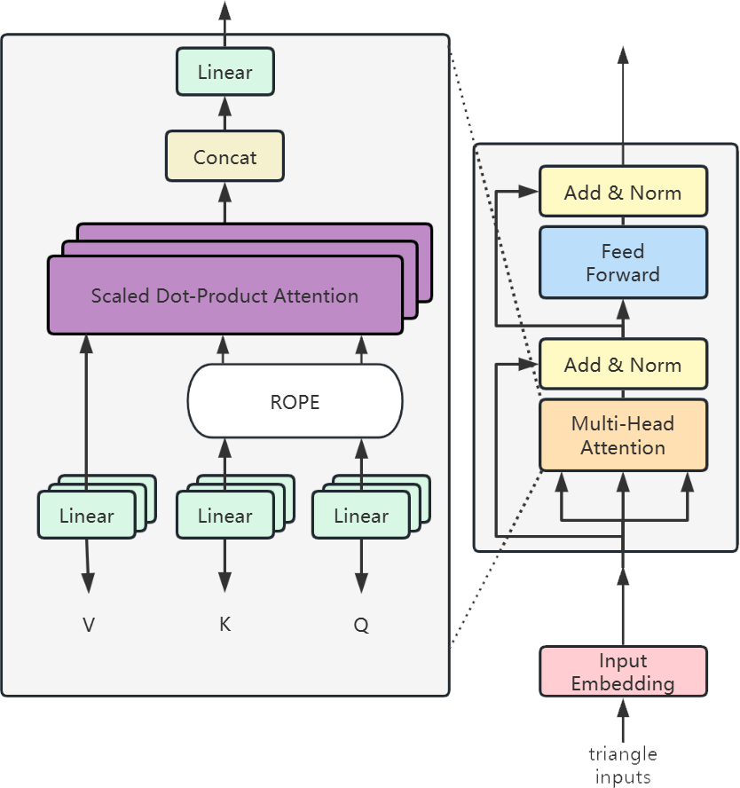
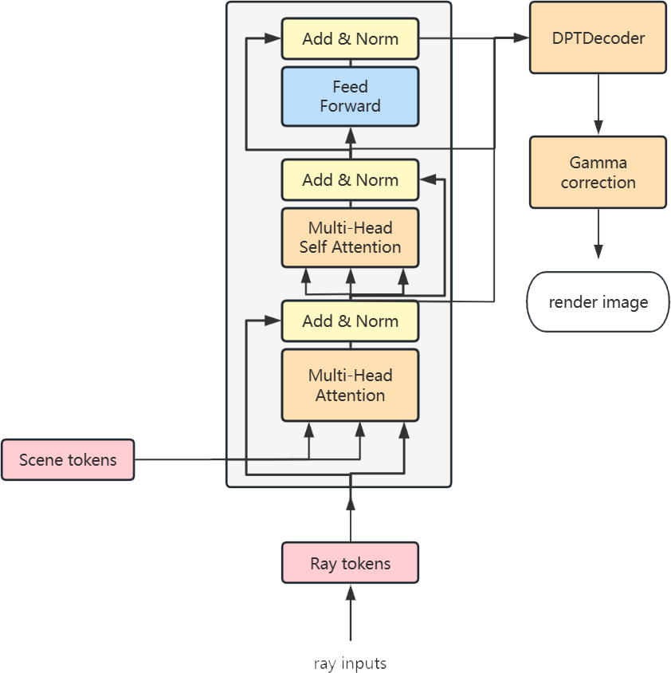
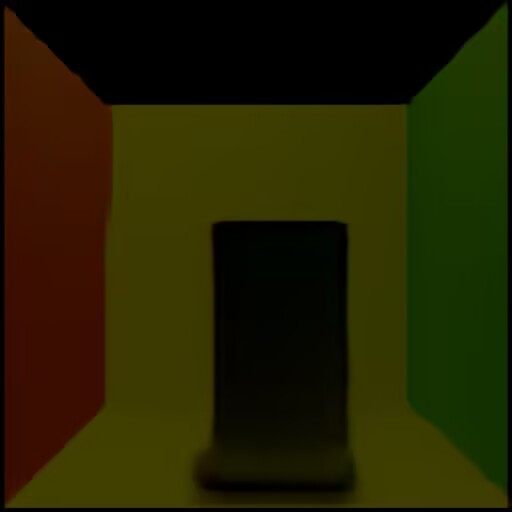
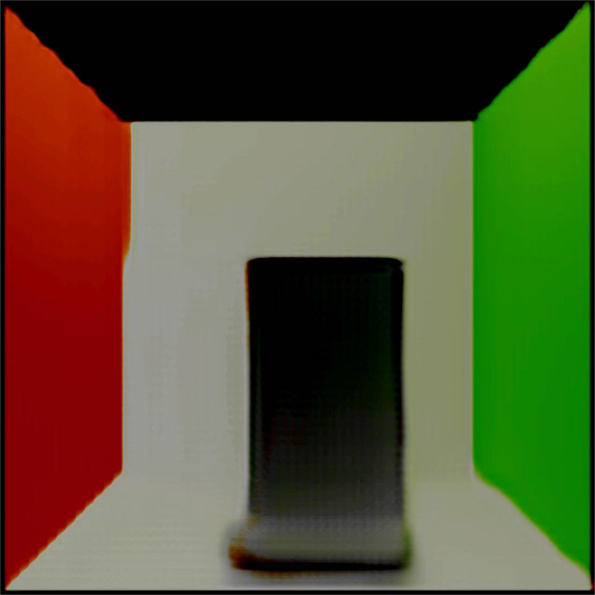
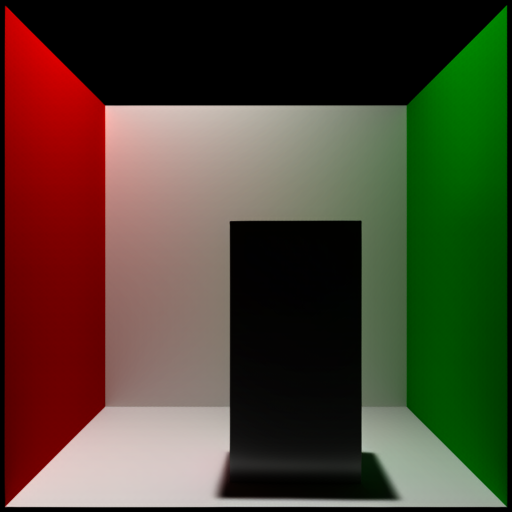
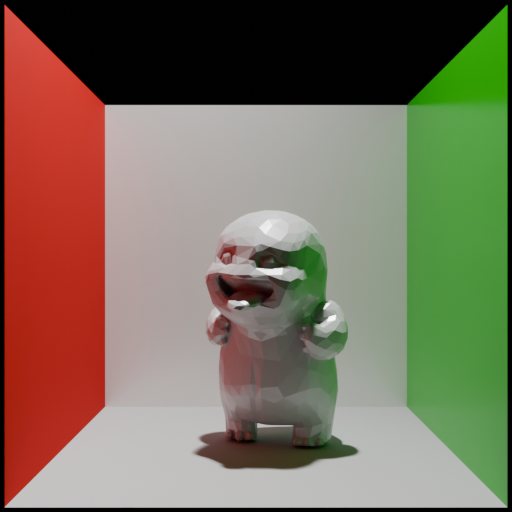
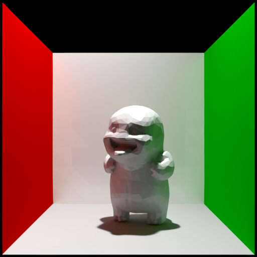

模块一
Scene Transformer
将无序的三角面片集合，编码为包含全局几何信息的场景Tokens。这是模型理解“世界是什么样”的第一步。
一种面向下一代实时图形的AI加速范式探索
汇报：雨伞鱼

将无序的三角面片集合，编码为包含全局几何信息的场景Tokens。这是模型理解“世界是什么样”的第一步。

Mesh Data (v1, v2, v3)
保留相对空间位置
8层MHSA提取特征
将每个像素的射线(Query)与全局的场景(Key/Value)进行深度交互，计算出最终颜色。这是“看”向场景并“画”出图像的核心。

每个像素的观察射线
来自上一模块
射线“查询”场景，获取渲染信息
提取不同中间层共同解码输出
对策： 我们自主搭建了基于Blender的自动化数据生成管线，程序化地生成了包含数千个高质量配对数据。
对策： 全面采用混合精度训练（FP16），在不牺牲模型精度的前提下，大幅降低了显存占用并加速了训练进程。
在 L1 + 0.5 * LPIPS 复合损失函数的引导下，模型从随机噪声开始，逐步学习并重建出清晰、真实的图像。





我们的框架是一个通用的图形合成器
本项目成功设计并实现了一种新颖的、可嵌入传统图形管线的双Transformer快速PBR渲染方案。我们通过创新的RoPE几何编码与场景-视图解耦架构，验证了利用序列模型直接从场景几何生成高质量渲染图像的可行性。实验证明，该方案在保持高视觉保真度的同时，实现了相较于传统路径追踪10倍的渲染速度提升，为实时图形领域的AI加速提供了一种有价值的新范式。
尽管成果显著，我们仍清醒认识到当前方案的局限性：
1. 模型规模： 5亿参数量导致巨大的存储和计算开销，是部署到消费级硬件的主要障碍。
2. 效果边界： 模型对训练数据中少见的高频物理效应，如焦散、多次镜面反射和复杂折射等现象的模拟能力尚有不足。
3. 性能瓶颈：
虽然实现了数量级加速，但3秒/帧的渲染速度距离真正的实时应用（如33ms/帧）仍有较大差距，需进一步的算法与工程优化。
扩展数据集： 进一步丰富我们的自建数据集，系统性地加入包含复杂光学现象（如透明材质的折射、金属的高光反射、次表面散射等）的场景。
提升效果上限：
针对当前模型的短板，研究引入更精细的BRDF参数作为条件输入，或设计专门的网络模块与损失函数，以提升对焦散等高频物理效应的模拟能力。
算法层面优化： 探索并引入前沿的Efficient Transformer架构（如Performer,
Linformer等），它们通过近似注意力机制，可将Transformer的计算复杂度从O(N²)降低到O(N)。这将从根本上、数量级地加速模型的推理速度。
工程层面压缩： 在算法优化的基础上，进一步应用知识蒸馏、网络剪枝与权重 量化等压缩技术，最终目标是在主流消费级GPU上，将渲染速度推向实时（>30 FPS）的性能标准。
实现可控编辑： 探索将光照参数（如光源位置、强度、颜色）和材质属性作为模型的动态条件输入，实现对渲染结果的实时交互式编辑。
赋能创意流程：
最终愿景是打造一个能无缝集成到现代设计与游戏引擎中的AI渲染插件，为艺术家和设计师提供前所未有的创作效率与自由度，真正实现“所思即所见”。
衷心感谢袁春老师的悉心指导
以及郑江茂、张洋、俞承霖助教在项目过程中的宝贵帮助！